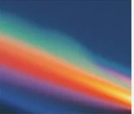

Ambitious Founders
People who think long-term and move with urgency.

Bird backs ambitious teams at the earliest stage, with capital, mentorship, and a network built to help you move fast and build something that matters.

We invest before it’s obvious. Before the traction. Before the hype. Because
the best companies don’t look safe at the start, they look interesting.
People who think long-term and move with urgency.
Ideas that matter, not just incremental improvements.

We invest in people who see what’s next, challenge assumptions, and use technology to make the improbable possible.

Bird is hands-on. We work closely with founders on product,
hiring, strategy, and fundraising, every step of the way.
How to get this opportunity and apply?

Tell us what you’re building, why now, and why you.
If we invest, you join a small cohort and start building immediately with our support.

We help refine your product, find early users, and prepare for the next round.
We partner with the people making tomorrow happen.
Different ideas. Shared ambition.
Everything you need to know before applying.
We partner with founders at the earliest stages—from a clear idea to an early product with its first users.
We typically invest early checks to fund MVPs and initial traction. Each partnership depends on the team and the opportunity.
No. A strong insight, a thoughtful team, and a clear understanding of the problem matter more than a polished pitch.
We work with founders remotely. Tell us where you are and how you prefer to collaborate.
Tell us what you’re building, who it is for, and what makes your approach different. Share a demo or deck if you have one.
Introduce your idea. Make it the beginning of something.